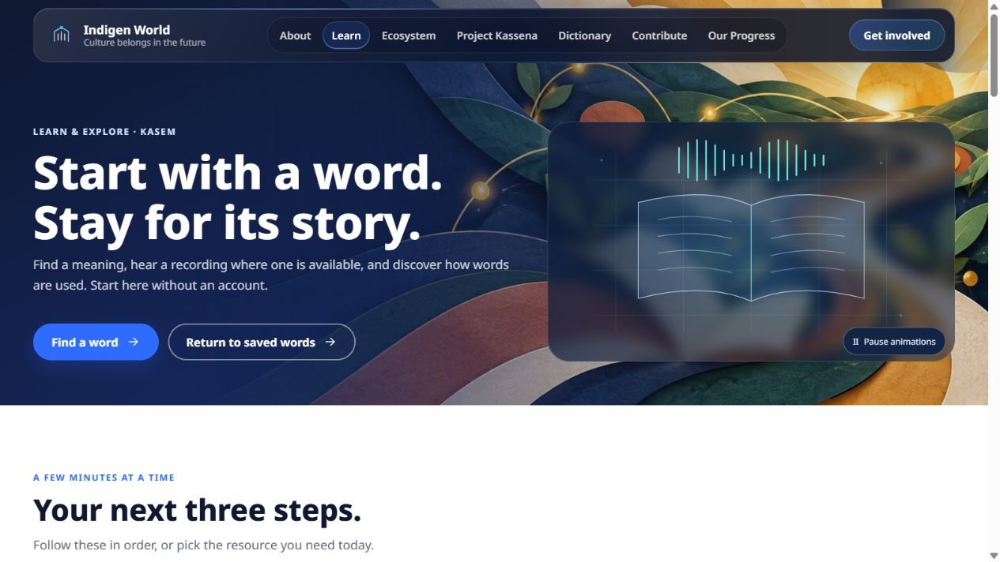
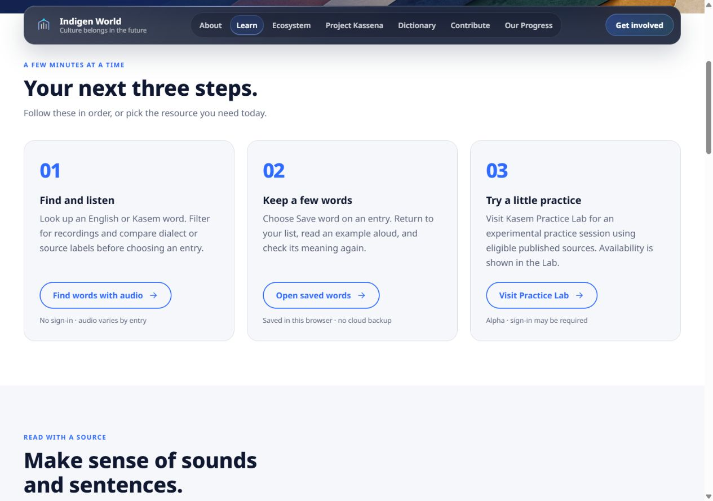
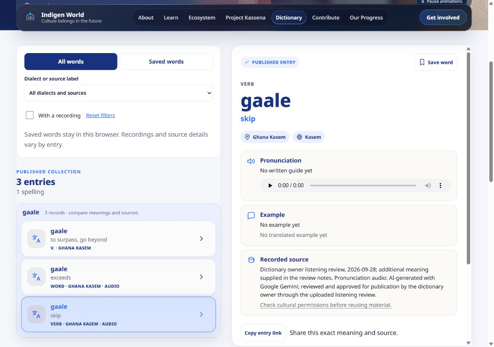
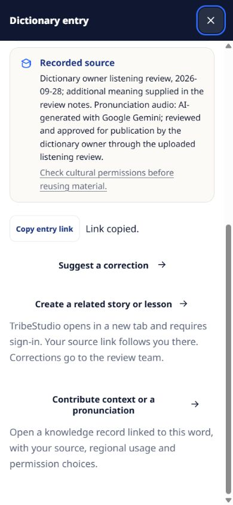

Website release — October 10, 2026. These improvements are live on Indigen World, with production pages and build assets verified after deployment. The opening screenshot shows the live website; the remaining screenshots show the tested local preview.
Finding a word is a useful first step. Knowing where to go next matters too. We have prepared a learning guide that brings the public dictionary, available recordings, saved words, spelling and grammar guides, and published expressions into one starting point.

The guide gives learners three next steps: find a word and listen where a recording exists, keep a few words in this browser, and explore the experimental Kasem Practice Lab. Each step explains its limits. Public reading needs no account; Labs show their own access requirements and remain alpha.
Spelling and grammar links lead to the existing reference guides. The wider sentence collection opens at Venacula in a separate tab. Published expressions retain their meanings and source notes. A separate creative-film card identifies its generated imagery clearly.

Exact word and meaning matches now come before partial matches. Visitors can combine a dialect or source label with the recording and saved-word filters. A reset action helps when a combination returns no results.
When several matching records share a spelling, they appear together with an explanation. Each meaning and source remains a separate entry, and tone marks are preserved. Records explicitly classified as sentences or expressions stay outside this word view; this change does not delete or rewrite the source records.

Choose Save word on an entry, then return through Saved words. Saved lists stay in the same browser and have no cloud backup. If the browser blocks storage, the page explains that the list will last only for the current page session.
Copy entry link shares the selected record. An unavailable public link gives a recovery message. On phones, entry details open in a full-screen panel, with keyboard focus kept inside until it closes.
Entries keep their recorded attribution and a link to cultural permissions guidance. Missing sources, examples and recordings are still shown openly. “Published entry” describes availability; it does not claim that every record has completed a linguistic review.

The learning guide and dictionary now offer Share feedback. This opens the existing contact form with the page context and prompts about what the visitor wanted to do, what helped or got in the way, and how easy the experience felt. The visitor still chooses whether to submit.
This update improves discovery and navigation; it does not fill missing language material automatically. Source checks, regional labels, examples and recordings need editorial work with appropriate review and permissions. A small usability study is prepared to learn whether these changes help visitors complete real tasks.
The website improvements are live. Mobile access is still presented through a waitlist, Labs remain experiments, newsletter delivery is still described as being prepared, and final legal review remains pending. No improvement in user satisfaction or learning outcomes is claimed yet.